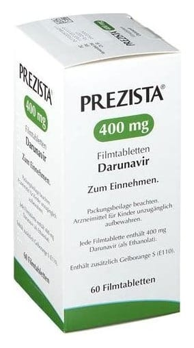

Prezista 400 mg Film Kaplı Tablet, 60 Adet

Ne için kullanılır
KT · Bölüm 1 PREZISTA İnsan İmmün Yetmezlik Virüsü (HIV) enfeksiyonunun tedavisinde kullanılan antiretroviral bir ilaçtır.Proteaz inhibitörleri olarak adlandırılan bir gruba dahildir. PREZISTA, vücudunuzdaki HIV miktarını azaltma yoluyla etki göstermektedir.Bu, sizin bağışıklık sisteminizi düzeltecek ve HIV enfeksiyonu ile bağlantılı hastalıkların gelişme riskini azaltacaktır. PREZISTA, bir yüzünde TMC ve diğer yüzünde 400 MG yazılı açık turuncu oval 60 adet tablet içeren plastik şişelerde kullanıma sunulmaktadır. PREZISTA, HIV ile enfekte olmuş ve daha önce antiretroviral ilaçlar kullanmamış erişkinlerin ve daha önce antiretroviral ilaçlar kullanmış belirli hastaların (doktorunuz bunu belirleyecektir)tedavisi içinkullanılır. PREZISTA, her zaman düşük doz ritonavir ve diğer anti-HIV ilaçlarla birlikte kullanılmalıdır.Doktorunuz, sizin için en iyi ilaç kombinasyonunun hangisi olduğunu söyleyecektir.